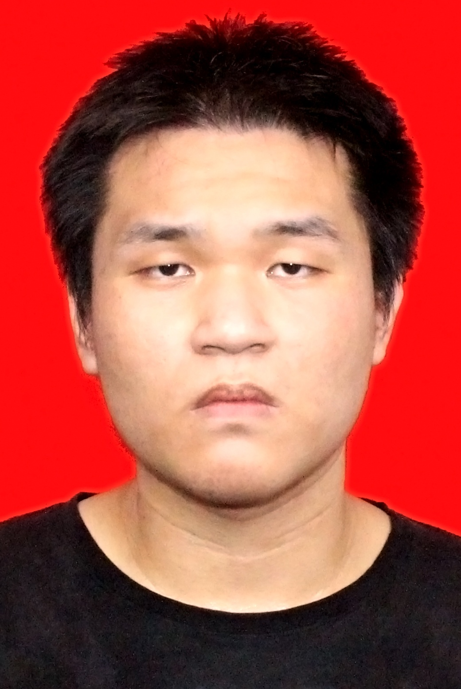

|
 |
PhD Candidate,
College of Control Science and Engineering, Zhejiang University
No. 38 Zheda Rd.(Yuquan Campus), Hangzhou, Zhejiang Province, People's Republic of China
Phone: 18027539728
Email: 12032042@zju.edu.cn
|
Undergraduate Education - Sun Yat-Sen University
Background: I obtained my undergraduate degree of Chemical Engineering and Technology at Sun Yat-Sen University with a GPA of 4.1-5.0, ranking 2-108.
Honors: I won national scholarships twice during my undergraduate period.
As first author, I had 1 paper accepted
Language: I received CET-6 at 533.
Graduate Education - Zhejiang University
I served as a minister of the Faculty Student Union, and minister of the competition department, Artificial Intelligence Association.
During my first year study, I obtained a GPA of 4.27-5.0.
As first author, I had 2 journal papers accepted, 4 journal papers in submission, and 1 conference paper in submission.
As co-author, I had 1 conference paper accepted, 2 conference papers in submission.
Primary Skills
Programming: Python machine learning, deep learning, and probabilistic programming language (Pyro), General Algebraic Modeling System (GAMS).
Optimization: Convex optimization, Optimal Control, Stochastic Optimization.
Modelling: Variational Inference, Optimal Control, Bayesian Filtering & Smoothing, Mathematical Programming, Linear Dynamical System, Transport Process (Mass, Heat, Momentum).
Plan and Control: digital signal processing, image processing, control system simulation, navigation, guidance, detection, aircraft control fundamentals.
Application: Time series forecast, Anomaly Detection, Industrial recommenders.
Ant Group - User-growth Algorithm Group
Here I worked with Leilei Ding, supervised by Jianmin Huang and Wei Chu.
I completed a full-stack anomaly detection & diagnosis for Ant applet monitoring business (about 12 k applets): requirement communications, data preparation, algorithm coding, offline deployment and performance tuning.
I proposed a novel time-series forecasting algorithm based on neural ordinary differential equation, and completed a the algorithm part of time-series forecasting task for Ant Five-Blessing (Wufu in Chinese) in 2022.
I participated in the ESCM model, which regularizes the ESMM with counterfactual risks minimization for CVR estimation.
Academic results for time series forecasting model: The effectiveness of the time-series forecasting algorithm was demonstrated in the business side. We released 1 ICDE paper in submission, and 1 patent.
Academic results for CVR estimation model: The effectiveness of ESCM was demonstrated theoretically. We released 1 patent, 1 conference paper, and a special talk on SIGIR; 1 TNNLS submission.
Industrial application for time series forecasting model: The proposed time-series forecasting algorithm is depolyed in the backend of Ant Five-Blessing backend.
Industrial application for CVR estimation model: The proposed time-series forecasting algorithm is depolyed in the backend of Ant Five-Blessing backend.
Projects
Multi-source Heterogeneous and Low Quality Industrial Data Modeling & Fusion Methodology (National Natural Science Funding)
Background: Industrial big data has been greatly confronted with low quality property for the existence of the measurement noise. Besides, it should be pointed out that the industrial data has multi-modal property for the diversity of process measurement instrumental. How to model industrial big data based on such process data is an important issue.
Contribution: I wrote the full part “Project Basis and Research Content” (core part).
Results: An NSFC with 1, 040 k was approved for approval.
The Synthesis of Machine Learning Systems from the Perspective of Cybernetics
Background: We found that existing Variational Inference algorithm can be reformulated into a stochastic optimal control problem thanks to the Celebrated Girsanov theorem. As such, how to analyze the inference model from the perspective of cybernetics is an interesting topic.
Contribution: We simplify the optimal control problem with respect to the variational inference problem, and derive a novel expectation derivation method which does not discreteinize the time domain. To this extend formulate a novel algorithm named adjoint Expectation Maximization, which solve the continuous-time latent variable model efficiently under large dataset.
Results: We improved the conventional latent variable model under regression task 50 %, and proposed 2 IEEE Transactions (Under Review).
A brief cv.
|